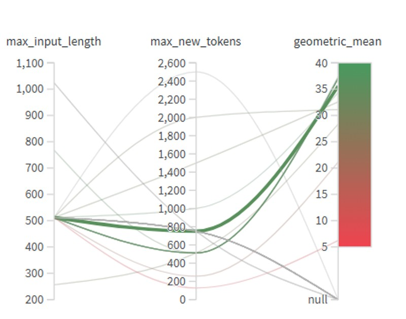

Abstract
Based on the Kaggle competition “Deep Past Challenge: Translate Akkadian to English,” this project aims to develop an effective translation model for converting Akkadian transliterations into English using sequence-to-sequence methods. We fine tuned a ByT5 transformer model, which operates at teh bytel level and is well suited for handling low resource text like the Akkadian language. Hyperparameter tuning was performed using Weights & Biases (WandB). We managed to achieve a score above 24 on the competition metric, which approaches the scores of some top-performing models.
Translation Examples

The akkadian symbols are first transformed into transliterated text before being translated.
Introduction / Background / Motivation
What did we do?
We are doing a challenge from Kaggle where we take in transliterations of Akkadian (ancient Middle Eastern) text and translate them to English. Our main objective is to build and train a deep learning language model to perform this translation task, meaning we are training a computer program to recognize patterns in these ancient words so it can automatically translate them for us. We are motivated by the fact that there is a large amount of Akkadian text that has been transliterated but not yet translated, and we believe that a deep learning approach can help us unlock the meaning of these ancient texts.
How is it done today, and what are the limits of current practice?
Currently, the translation of Akkadian text is done manually by scholars who have expertise in the language. This process is time-consuming and requires a deep understanding of the language and its grammar. Additionally, there are many transliterated texts that have not yet been translated due to the sheer volume of material and the limited number of experts available. The limits of current practice include the slow pace of translation and the potential for human error in interpreting the text.
Who cares? If we are successful, what difference will it make?
If we are successful, we will be able to help scholars and historians better understand the content of Akkadian text, which can provide valuable insights into the culture, society, and history of ancient Mesopotamia. Additionally, our work can contribute to the field of natural language processing by demonstrating an effective approach to translating low-resource languages.
Approach
We approached the task using a sequence to sequence transformer model based on byT5 architecture model. Unlike traditional NLP models, byT5 operates directly on byte-level input, which allows it to handle a wide variety of languages and scripts without the need for tokenization. We chose this approach because it has been shown to be effective in low-resource language settings, and we believed that it would be well-suited for the task of translating Akkadian text. Additionally, we implemented a custom training loop and experimented with different hyperparameters to optimize the performance of our model.
Datasets from Kaggle and Huggingface were used to generate training and validation sets, and beam search was used to generate predictions. To monitor model performance and compare hyperparameter configurations, Weights & Biases (WandB) was used.

Example of using Weights & Biases to test hyperparameter configurations.
We thought this approach would be most successful because Akkadian as a language has unique symbols and meanings where tokenization can be difficult because the same 'letter' in a word can have different meanings. Thus we need to use a byte-level model that can learn the meaning of each symbol in context rather than relying on a fixed vocabulary of tokens. This approach is new in the sense that using this type of model for an ancient language with such a unique structure has not been widely explored.
What problems did we anticipate and encounter?
We anticipated challenges related to the low-resource nature of Akkadian data, including limited training examples and inconsistent transliteration formats. We also faced practical challenges such as GPU memory limitations and time constraints. We solved these problems by finding datasets on huggingface and implementing optimization to the code.
Results
How did we measure success?
The main metric used to evaluate the model was the geometric mean of BLEU and chrF++, where the BLEU score represents how close a candidate text is to the reference text, and chrF++
evaluates character-level and word-level similarity.
Higher score means better translation and thus higher competition performance.
Results:
| Submission Type | Score |
|---|---|
| First Score | 10.65 |
| Middle Score | 18.19 |
| Best Score | 24.32 |
Parameters for our best result:
- Number of beams: 5
- Max input length: 2000
- Max new tokens: 2000
- Length penalty: 1.0
- Repetition penalty: 1.1
- No repeat ngram size: 18
- Early stopping: True
- Model type: community

Conclusion and Future Work
How easily are our results able to be reproduced by others? Did your dataset or annotation affect other people's choice of research or development projects to undertake?
Our work should be easily replicable, as the code is publicly available on Github and Kaggle. The individual datasets we used are also publicly available, although our combination of them for finetuning is quite possibly novel.
Does our work have potential harm or risk to our society?
We do not believe our work has much potential for direct harm to people. However, since translations of Akkadian are fairly rare and there is a large accuracy gap between machine translations and expert translations, there is a risk of model collapse if machine translations like ours are used in databases. It could also cause confusion for beginning scholars of Akkadian if they treat our translations as ground truth, when they are really just one step on the path to better translation strategies. To avoid these pitfalls we will avoid publishing our translations without an explicit disclaimer that they are machine-generated and should not be used as ground truth for training.
What limitations does our model have? How can we extend our work for future research?
Our model converts transliterations to translations, but still requires an outside source to construct the transliterations from the original cuneiform. Fortunately, this is quite practical, as CNNs have achieved 97% accuracy on converting cuneiform to transliteration. By combining our existing inference pipeline with one of these models we could build a full Cuneiform-to-Translation model.